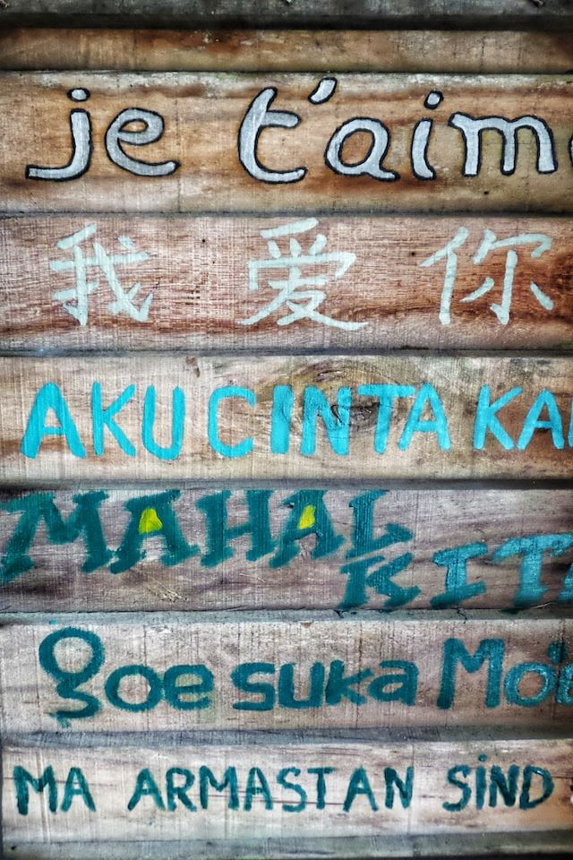

I'm also very interested in different languages - spoken, sign, and body. The different ways people and animals communicate (sometimes even without realizing it) has always been a topic of interest for me.

More recently, I've discovered my interest in coding! Having a way to communicate with the computers and the applications we work with everyday garners a world of interest on its own.